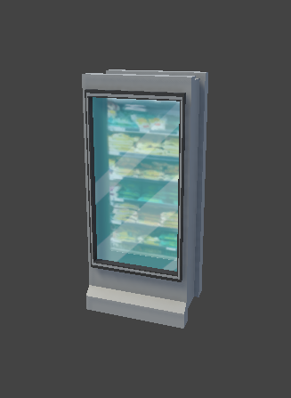
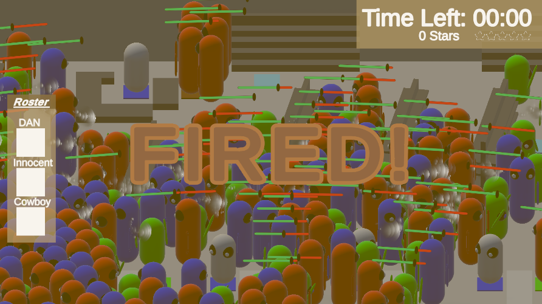
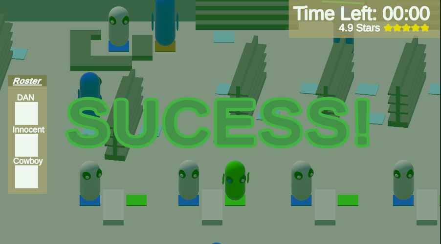
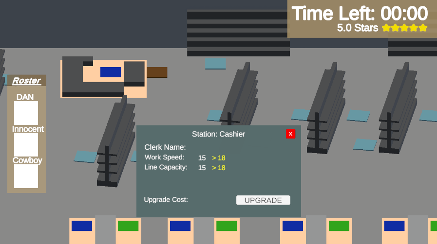

01

Under Staffed
Team of 7 · fast-paced workplace management game



The gameYou run a chronically understaffed business and have to juggle workers, stations, and customers to keep everyone happy and keep your job.
My roleI built the core worker system: drag-and-drop worker control, area assignment, and the behavior for every work station. I also owned the timer system, the interaction system, scripted UI elements, and the door system. These are the systems the whole game loop depends on, so I wrote them to be modular enough for teammates to build on.